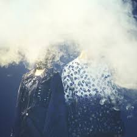

ボーカルのEMAとコンポーザーのMisumiによる2人組音楽ユニットDUSTCELL。
それぞれ歌い手とボカロPとしてキャリアを積んできた2人は、DUSTCELLの結成から注目を集め、以降、精力的に作品リリースとライブを行っている。
ダークで退廃的な世界に深く踏み込み、傷、痛み、命、孤独といったテーマに寄り添いながら、時には闇の中に希望の光を見出し、また時には光から闇へと手を伸ばす。
変わりゆく自らの創作意欲を恐れず受け入れ、表現し続ける。そうして生まれた楽曲たちに全身全霊で命を吹き込み、ライブパフォーマンスではまるで生き物のように表現する。
替えのきかない存在として、リスナーにとっての浄化、救済となれたら。
2025年3月にはデビュー5周年を記念した初の日本武道館公演も決定。
